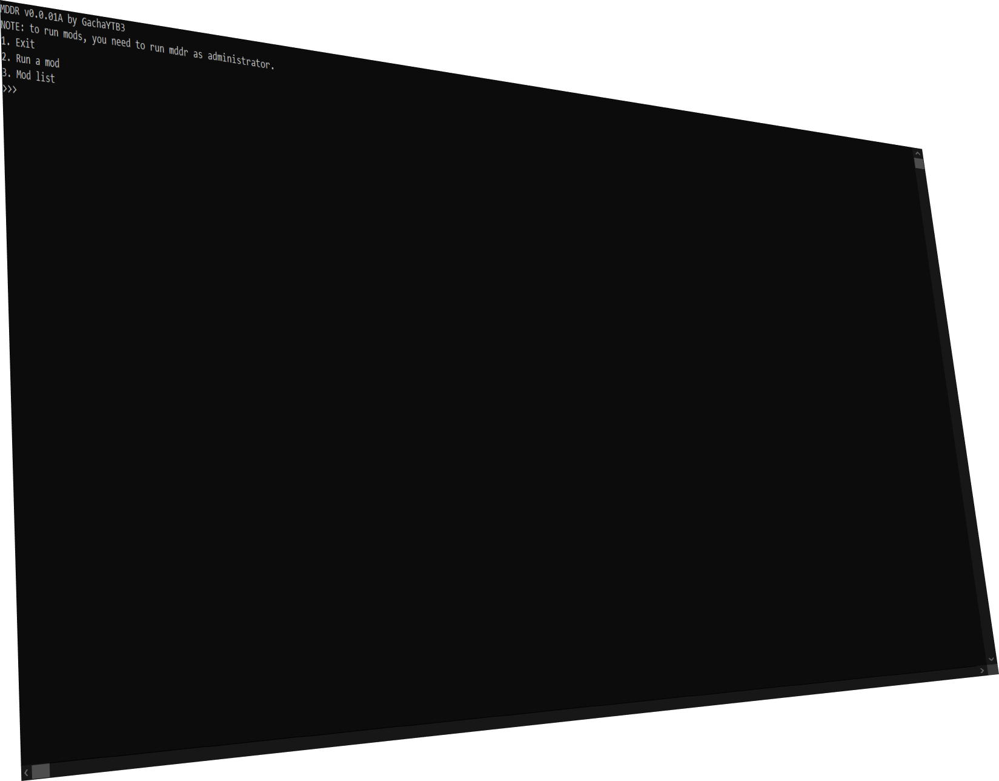

This is MDDR.
A modding tool for SPWN.
Download the release in the github repo.
Run one command. Add your custom-made IPS patches.
Run MDDR, set the path to your SPWN executable & version.
Type two numbers, and you're done modding SPWN with MDDR.